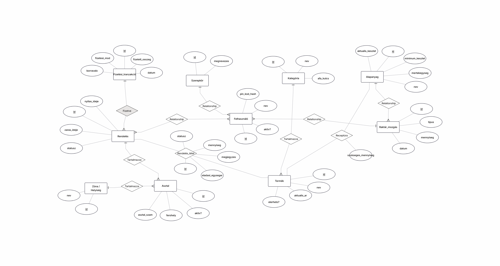

A rendszer implementációja során az adatbázis-kezelési feladatokra a PostgreSQL relációs adatbázis-kezelő (RDBMS) rendszert választottuk. A döntés főbb okai:
A rendszer logikai felépítését, a valós világbeli fogalmakat és a közöttük lévő összetett kapcsolatokat az alábbi ER diagram szemlélteti. A modell részletesen kidolgozott: tartalmazza az N:M (több-a-többhöz) kapcsolatok feloldását, valamint a komplex számlabontási lehetőségekhez szükséges fizetési logikát.
A rendszer teljes szemantikai adatmodellje

| Egyed (Entity) | Attribútumok | Leírás és Kapcsolatok |
|---|---|---|
| Szerepkör | id [PK], megnevezes | A dolgozók jogosultsági szintjei (pl. Üzletvezető, Pincér). |
| Felhasználó | id [PK], nev, pin_kod_hash, aktiv | Az étterem dolgozói. A jelszót hashelve tároljuk, a törlést logikai inaktiválással oldjuk meg. Kapcsolódik a Szerepkörhöz. |
| Zóna / Helyiség | id [PK], nev | Az étterem fizikai területeinek (Terasz, Belső tér) nyilvántartása. |
| Asztal | id [PK], asztal_szam, ferohely, aktiv | A vendégtér asztalainak nyilvántartása. 1:N kapcsolatban áll a Zónákkal. |
| Kategória | id [PK], nev, afa_kulcs | A termékek csoportosítása és a hozzájuk tartozó adókulcs. |
| Termék | id [PK], nev, aktualis_ar, elerheto | Az étlapon és itallapon szereplő késztermékek. Csak a jelenleg érvényes árat tartalmazza. |
| Alapanyag | id [PK], nev, mertekegyseg, aktualis_keszlet, minimum_keszlet | A raktárkészlet elemei. A minimum készlet segíti az újrarendelési figyelmeztetéseket. |
| Receptúra | szukseges_mennyiseg | Kapcsoló egyed (Associative Entity). Definiálja, hogy egy ételhez miből mennyi alapanyag kell. |
| Raktár_mozgás | id [PK], tipus, mennyiseg, datum | A készletváltozások historikus naplózása (Bevételezés, Selejt, Fogyás). A Felhasználóhoz és az Alapanyaghoz kötődik. |
| Rendelés | id [PK], nyitas_ideje, zaras_ideje, statusz | Egy adott asztalhoz rögzített fogyasztás fejlécadatai. |
| Rendelés_tétel | id [PK], eladasi_egysegar, mennyiseg, statusz, megjegyzes | Kapcsoló egyed. A rendelés konkrét elemei. Az eladasi_egysegar rögzítése kritikus az ártörténet miatt. |
| Fizetési_tranzakció | id [PK], fizetett_osszeg, fizetesi_mod, borravalo, datum | A számlakiegyenlítések rögzítése. 1:N kapcsolatban van a Rendeléssel (asztalbontás támogatása). |